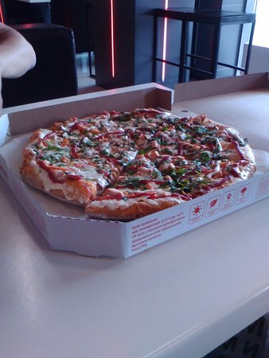

Иван ★★★★★

Здравствуйте, хочу оставить отзыв о пиццерии, которую открыли в нашем городе. Очень понравилась пицца. Она очень вкусная. И самое главное, что она не большая, и не дорогая. Заказываем здесь пиццу уже второй раз. Нам нравится Пицца очень хорошая Доброго времени суток! Хочу поделиться с вами своим впечатлением о пицце "Pizza Mia". В нашем городе очень много пиццерий, но на мой взгляд "Pizza Mia" - самая лучшая. Во-первых, очень большой выбор пиццы. На любой вкус.
Мария ★★★★
Я люблю пиццу, но раньше не могла себе позволить есть ее каждый день. Но когда я увидела эту пиццу в магазине, то сразу же решила попробовать. На вкус она оказалась очень даже ничего. И я решила, что буду покупать ее и дальше. До этого я покупала пиццу только в ресторанах или на дом. А эта пицца оказалась Вкусная, с аппетитной корочкой! Недавно попробовала пиццу на хлебной основе. Она оказалась действительно вкусной. Очень понравилась. Даже не ожидала, что будет так вкусно
Саня ★★★★★
Я обожаю пиццу, но вот не знаю где бы можно было покушать ее. А тут в один прекрасный день, мне на почту поступило сообщение, о том, что там-то и там-то, есть пиццерия, которая готовит самую вкусную пиццу. И вот я решил, почему бы и нет. Поехали мы на метро. Приехали туда, и оказалось, что это не пиццерия, а кафе, где можно просто перекусить. Но, поскольку у меня было такое хорошее настроение, я решила перекусить пиццей. Взял я себе маленькую пиццу с курицей, сырным соусом и помидорами.
Олег ★★★★
Я очень люблю пиццу, так как это блюдо итальянское. У нас в городе, я не могу найти хорошую пиццу. Пицца Belicimo, в моем городе, это просто находка. В пиццерии, подают на стол, по-настоящему теплую пиццу. Это очень вкусно. Мне нравится, что пицца здесь, всегда свежая и горячая. Вкусная, нежная, вкусная. К тому же, они предлагают большой выбор начинок, здесь можно заказать пиццу с морепродуктами, с ветчиной, с грибами, с сосисками. Я заказываю пиццу Пиперони.
Сергей ★★★★
Очень даже неплохо. Но, к сожалению, не для всех. Так как все-таки в первую очередь это ресторан. И если вы пришли в пиццерию, то должны понимать, что это не ресторан. Пиццу заказывали раз пять. Она была вкусная. Не знаю, может нам просто так везло. А так, за такую цену можно было бы и лучше. Что касается обслуживания, то оно было хорошим. Быстро приносили заказы. Да и официант был достаточно вежлив. Также хочу отметить, что в этом ресторане есть детская комната.
Пётр ★★★★★
Пиццу люблю, а кто не любит? Всегда приятно, когда пицца с пылу, с жару. Но, оказывается, есть и минусы. В пиццерии очень дорого. Например, порция пиццы в среднем 1000 рублей. Это достаточно много. А с учетом того, что все блюда очень большие, то счет получается и вовсе неподъёмный. Хотя и вкусно. И с этим не поспоришь. Особенно с тем, что пицца из Магнолии вкусная. Еще один минус - это время доставки. Я живу на улице Ленина. Поэтому заказ в данной пиццерии мне приходится ждать долго.
Настя ★★★★★
Зашли с подругой, заказали пиццу, две пасты и чай. Пицца, как и паста, просто супер! Я очень люблю пиццу и не могу сказать, что меня в ней что-то не устраивает, но эта пицца просто потрясающая! Очень вкусно, сытно и даже не очень дорого. А вот паста - это что-то, такого вкуса я еще не пробовала. В общем, пицца, паста и чай - отлично!
Владимир ★★★★
Во-первых, пицца очень вкусная, даже не смотря на то, что сегодня не было начинки. Я думаю, что все дело в тесте. Тесто очень мягкое, очень вкусное. По вкусу очень похоже на итальянскую пиццу. Пиццу привезли быстро, я даже успел ее поесть. Очень рекомендую. Все было очень вкусно и быстро.